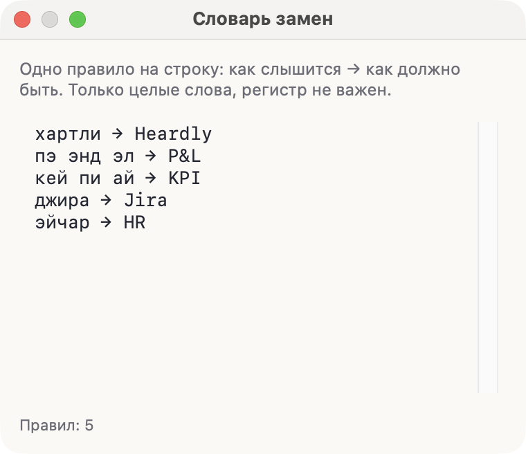
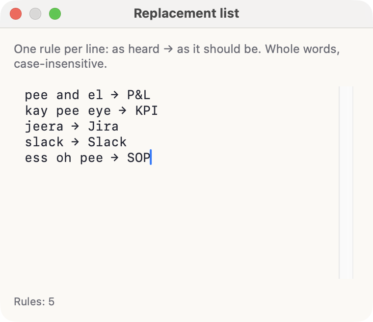

Словарь заменReplacement list
Имена коллег, названия продуктов и профессиональные сокращения модель слышит так, как они звучат. Словарь замен приводит их к тому виду, в котором вы их пишете.Colleagues’ names, product names and trade abbreviations come out the way they sound. The replacement list turns them into the spelling you actually use.


Как писать правилаWriting the rules
Каждая строка — одно правило: слева то, как слово слышится, справа то, как оно должно выглядеть. Разделитель — стрелка.
хартли → Heardly
пэ энд эл → P&L
кей пи ай → KPI
джира → JiraЗамена срабатывает только на целые слова, регистр при поиске не важен. Правила применяются и к диктовке, и к расшифровке звонков, и к файлам.
Each line is one rule: on the left what the word sounds like, on the right how it should look. The separator is an arrow.
pee and el → P&L
kay pee eye → KPI
jeera → Jira
slack → SlackA replacement matches whole words only, and the search ignores case. The rules apply to dictation, to call transcripts and to files alike.
Где открытьWhere to open it
Настройки → Диктовка, строка «Словарь замен», кнопка «Изменить». Список сохраняется сам, отдельной кнопки сохранения нет.
Settings → Dictation, the “Replacement list” row, the Edit button. The list saves itself; there is no save button.
Не пытайтесь описать весь рабочий словарь сразу. Выпишите то, что модель путает чаще всего: фамилии, названия систем, аббревиатуры. Этого обычно хватает.Don’t try to describe your whole working vocabulary at once. Write down what the model gets wrong most often: surnames, system names, abbreviations. That is usually enough.